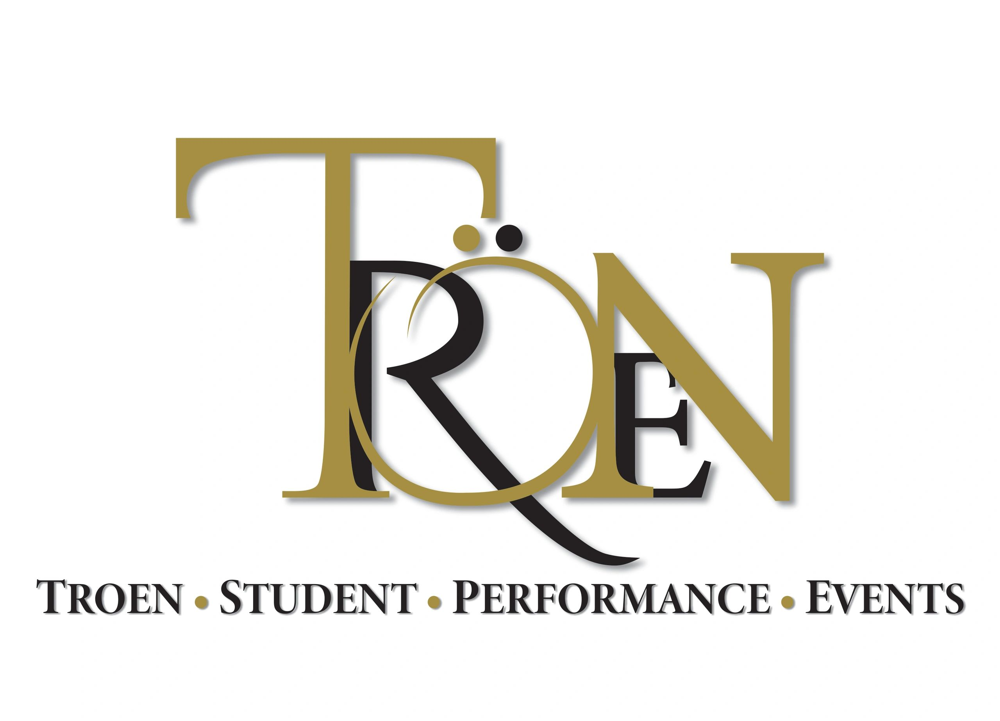

Program evidence
The program lists four concert bands.

Working demonstration
| Name | Type | Location | Status |
|---|---|---|---|
| Wando High School | School | Mount Pleasant, SC | Research example; interest unverified |
| Salem High School | School | Salem, VA | Research example; interest unverified |
| Music Travel Consultants (MTC) | Tour operator | Indianapolis, IN | Candidate; Troen connection unconfirmed |
Mount Pleasant, SC Research example
A concert program worth a closer look.
Concert band; participating ensemble not selected
The program lists four concert bands.
The Midwest Clinic lists Wando’s Symphonic Band for December 19, 2019.
A clinic-and-performance conversation is plausible for this established concert program. March 3 feasibility and participation are unverified.
Research interpretationBobby Lambert
Director of Bands
director@wandobands.org
Published program contact; no deliverability check or permission to send established.
Read sourceThe school links to wandobands.org, establishing the program-site relationship.
Ensemble and location evidence. Undated page checked September 10, 2026.
Explicit adult role and public role mailbox. Other staff and booster contacts are excluded.
Use the December 19, 2019 event detail. The site’s 2026 promotional header is not this performance’s date.
Review the educational angle and matching director sheet. Before a real approach, check relationship ownership and whether an appropriate March 3 offer can be made.
Troen’s supplied event overview, pages 1–2 (P01), and March 3 license photograph (I06). The Materials view includes the shared brochure; the license and internal logistics remain outside this demonstration.
A contrasting research case
The old list left two Virginia schools unresolved. The reviewed case is Salem High School, Salem, VA, in Salem City Schools.
Salem’s documented concert ensembles support an educational performance conversation. Resolving the school identity improves the research; it does not establish March 3 feasibility or interest.
The Virginia Beach SunDevil program is a separate school. Its contacts have not been carried into this record. Past parade participation is undated historical context.
School identity: The school site gives 400 Spartan Drive, Salem, Virginia, and identifies Salem City Schools. Read source
Concert program: The program describes two concert bands and a symphonic band within Salem City Schools. Read source
Historical travel context: The marching program reports past Philadelphia Thanksgiving Day Parade participation, without a year. This is historical context, not a current trip plan. Read source
Same-name school excluded: The separate SunDevil program explicitly identifies Virginia Beach. Its staff and contact details are not assigned to the City of Salem record. Read source
Published adult role: John E. Wright, Director of Bands.
jwright@salem.k12.va.us
The program’s alumni page labels the role and prints the email; its home page also publishes the name and mailbox. Undated pages reviewed September 11, 2026; mailbox deliverability and permission to send are unverified. Read source
Download Salem research noteCandidate
Student music tour operator · Indianapolis, IN
MTC publishes a March 3, 2027 Carnegie Hall festival listing. Its connection to Troen remains unconfirmed.
Research example only. Troen relationship and interest are unknown. No recommendation to contact MTC.
MTC markets music travel and lists a planned March 3 NYIMF event. The NYIMF/Troen match is unconfirmed. This is an illustrative research candidate.
Organization identity: MTC describes itself as an Indianapolis-based tour operator creating customized trips for student music groups. Read source
Public service description: Its New York City page includes Carnegie Hall among performance-travel options. Marketing copy does not establish a completed MTC trip. Read source
Planned event listing: Its 2027 calendar lists the New York Invitational Music Festival at Carnegie Hall on March 3 for high school bands, choirs and orchestras. No reviewed page names Troen as producer. Read source
Reviewed 2026-09-11. The calendar was published March 17, 2026 and updated April 20. Its separate March 31 listing is outside this POC.
Choose a document to read here. Download an editable copy when useful.
Troen Student Performance Events
Discussion draft for the Wando High School band program
Wednesday, March 3, 2027
Stern Auditorium / Perelman Stage
For a concert program, the value of a destination performance begins before the first note and continues after the final bow. Troen’s March 3 Carnegie Hall event offers a setting for a focused conversation about musical preparation, student growth, and a memorable ensemble experience.
Wando’s documented concert-band program and historical Midwest Clinic appearance make the educational emphasis relevant. This is a research-based starting point, not an indication of Wando’s interest or travel plans.
The brochure describes a one-hour clinic at Boulevard Carroll Music Studios, with preparation support.
A stage soundcheck and concert performance sit at the center of the experience.
Written adjudicator feedback and an archival recording give directors something to revisit with their students.
The shared brochure describes an assigned event director and backstage support. A group-specific proposal would clarify the festival inclusions, travel responsibilities, approval needs, and payment terms together.
Explore whether the March 3 date, ensemble goals, and trip needs align. If they do, the next useful document is a tailored proposal that makes the educational experience and travel scope clear.
Experience details come from Troen’s shared March 3 / March 31 brochure. Final March 3 inclusions, eligibility, availability, pricing, and travel arrangements require a group-specific offer.
Research basis: Wando program; Midwest Clinic, 2019. Event basis: Troen’s supplied overview, pages 1–2.
Troen Student Performance Events
Wednesday, March 3, 2027 · Stern Auditorium / Perelman Stage
Internal discussion draft · September 11, 2026 · Not issued to a school
Experience details follow Troen’s shared March 3 / March 31 brochure. This draft focuses on March 3; final inclusions and group-specific terms belong in a tailored offer.
The brochure describes four parts: a clinic and rehearsal, a soundcheck on the Carnegie Hall stage, a concert performance, and an awards ceremony.
The brochure includes a one-hour clinic at Boulevard Carroll Music Studios, with preparation advice and support. It encourages directors and students to ask questions and identify areas where guidance would help.
The brochure offers comments-only participation as an alternative to a rating. It also lists written adjudicator comments and/or ratings for the director, plus an archival recording of the performance.
The brochure specifies the event T-shirt for the clinic and soundcheck, concert attire for the performance, and a backstage pass for entry to Carnegie Hall. A group-specific itinerary would set out arrival times and movement between locations.
The brochure describes an assigned event director, a base room for the ensemble, and staff escorts to the stage. These arrangements connect musical preparation with the practical movement of the group.
This FAQ describes the festival experience. A tailored proposal would identify any transport and accommodation, who arranges each part, the inclusions and exclusions, and the total price. This draft does not specify a travel package.
The clinic, performance and feedback provide a concrete educational focus for a proposed trip. A short approval summary could pair that purpose with the proposed itinerary and full trip cost, for the school’s own review. Approval is not assumed.
Source: Carnegie Hall Event Overview, pages 1–5.
Discussion draft · No place reserved or booking confirmed
After an interested reply
See how the work connects beyond finding a name.
Fictional group and activity. This is not Wando’s correspondence, approval status, payment history, or booking.
These are example planning states. Changing the situation sends nothing and records no real activity. Reset or reload returns to the first example.